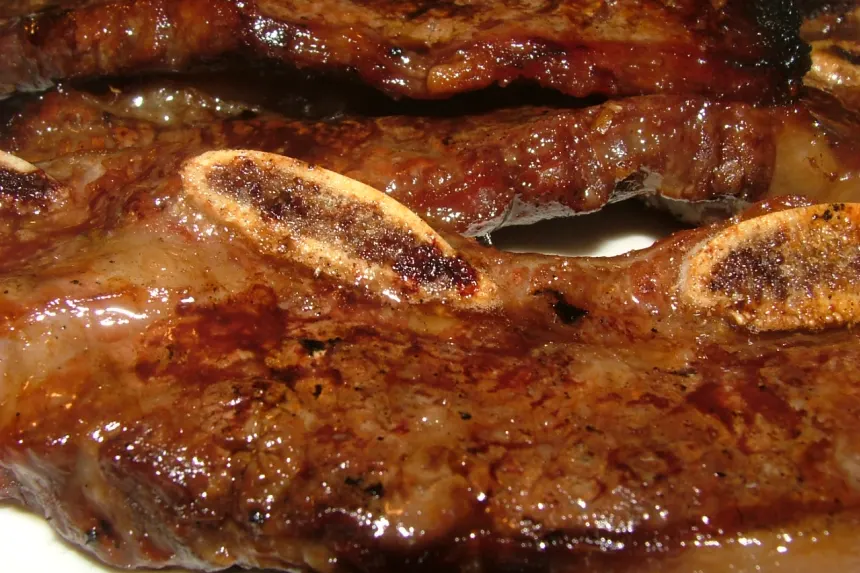

Hawaiian Short Ribs

2 -3
lbs short rib of beef
3⁄4
cup soy sauce
3⁄4
cup sugar
3⁄4
cup water
3
inches piece fresh ginger, sliced
1
garlic clove, minced
1
tablespoon sesame oil
DIRECTIONS
Combine all ingredients and marinate ribs for 4 hours.
Broil or barbecue to desired degree of doneness.